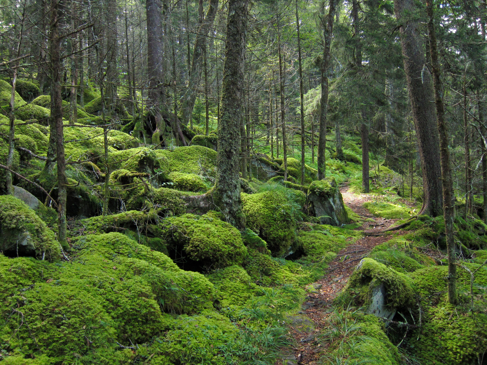

🚶🏽♂️ Lets walk!

jpg file
i love going on long walks through a trail or a forest it helps me clear my mind. whenever i am having a hard time i go outside and walk through the forest with earbuds or sometimes without so i can listen to the sounds of nature.